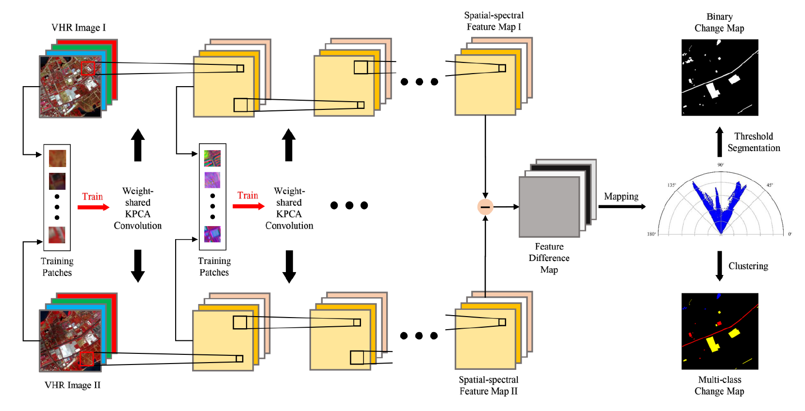
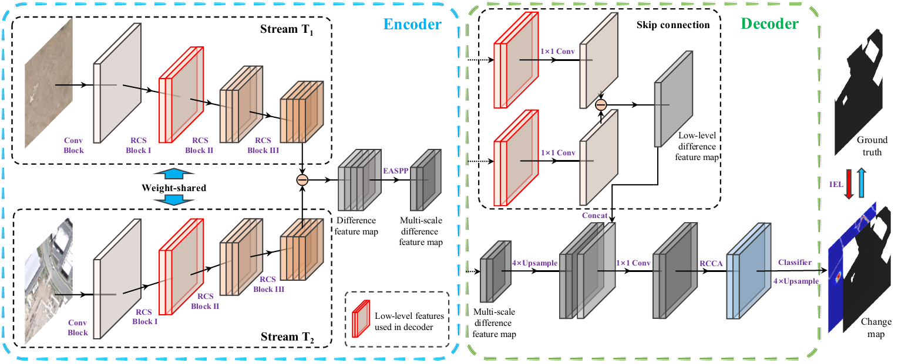

CHEN Hongruixuan (陈洪瑞轩) |
Short Bio
I am currently a Ph.D student at Sugiyama-Yokoya-Ishida Lab, the University of Tokyo, advised by Prof. Naoto Yokoya. My research has always been motivated by how to better monitor, describe and understand changes in our planet's surface by studying machine learing and computer vision approaches, thereby contributing to urban planning, resource management, environmental protection, and sustainable development.News
- [2022.12] One paper about multimodal change detection is accepted by IEEE TGRS!
- [2022.10] Received The University of Tokyo Fellowship (Todai Fellowship)!
- [2022.10] Received JST SPRING GX Fellowship!
Experience
Work Experience:
- 2021.05-2022.05 Trainee, The United Nations Satellite Centre, The United Nations Institute for Training and Research
Education Experience:
- 2022.10-2025.09 Ph.D. in Graduate School of Frontier Sciences, The University of Tokyo. Supervisor: Prof. Naoto Yokoya
- 2019.09-2022.06 M.E. in State Key Laboratory of Information Engineering in Surveying, Mapping and Remote Sensing, Wuhan University. Supervisor: Prof. Chen Wu, Prof. Bo Du, Prof. Liangpei Zhang
- 2015.09-2019.06 B.E. in School of Resources and Environmental Engineering, Anhui University. Supervisor: Prof. Yanlan Wu and Prof. Peng Jiang
Selected Publications
Journals:
 |
Unsupervised Multimodal Change Detection Based on Structural Relationship Graph Representation Learning
H. Chen, N. Yokoya, C. Wu, and B. Du IEEE Transactions on Geoscience and Remote Sensing (TGRS), 2022. [Paper][Code] |
 |
Change Detection in Multisource VHR Images via Deep Siamese Convolutional Multiple-Layers Recurrent Neural Network
H. Chen, C. Wu, B. Du, L. Zhang, and L. Wang IEEE Transactions on Geoscience and Remote Sensing (TGRS), 2020. (ESI Highly Cited Paper) [Paper][Code] |
|  |
Unsupervised Change Detection in Multitemporal VHR Images Based on Deep Kernel PCA Convolutional Mapping Network
C. Wu, H. Chen, B. Du, and L. Zhang IEEE Transactions on Cybernetics (TCYB), 2021. [Paper][Code] |
|
An Investigation of Traffic Density Changes inside Wuhan during the COVID-19 Epidemic with GF-2 Time-Series Images
C. Wu, Y. Guo, H. Guo, J. Yuan, L. Ru, H. Chen, B. Du, and L. Zhang International Journal of Applied Earth Observation and Geoinformation (JAG), 2021. [Paper] |
Conferences:
 |
Deep Siamese Multi-scale Convolutional Network for Change Detection in Multi-temporal VHR Images
H. Chen, C. Wu, B. Du, and L. Zhang International Workshop on the Analysis of Multitemporal Remote Sensing Images (MultiTemp), 2019. [Paper][Code][Data] |
 |
Dual-Tasks Siamese Transformer Framework for Building Damage Assessment
H. Chen, E. Nemni, S. Vallecorsa, X. Li, C. Wu, and L. Bromley Proceeding of the IEEE International Geoscience and Remote Sensing Symposium (IGARSS), 2022. [Paper][Data] |
Preprints:
|
Unsupervised Domain Adaptation for Semantic Segmentation via Low-level Edge Information Transfer
H. Chen, C. Wu, Y. Xu, and B. Du arXiv preprint arXiv:2109.08912, 2021. [Paper] |
|  |
Towards Deep and Efficient: A Deep Siamese Self-Attention Fully Efficient Convolutional Network for Change Detection in VHR Images
H. Chen, C. Wu, and B. Du arXiv preprint arXiv:2108.08157, 2021. [Paper][Code] |
Projects
Services
Membership:
- IEEE, Student Member
- IEEE Geoscience and Remote Sensing Society (GRSS), Student Member
Journal Reviewer:
- IEEE Transactions on Image Processing (TIP)
- IEEE Transactions on Neural Networks and Learning Systems (TNNLS)
- IEEE Transactions on Geoscience and Remote Sensing (TGRS)
- IEEE Journal of Selected Topics in Applied Earth Observations and Remote Sensing (JSTARS)
- IEEE Geoscience and Remote Sensing Letters (GRSL)
- Pattern Recognition
- Neurocomputing
- Geocarto International
- Frontiers in Remote Sensing
Resources
Codes:
Datasets:
- Wuhan Multi-Application VHR Scene classification dataset (WH-MAVS) (Dataset)
Awards
- 2022, The University of Tokyo Fellowship (Todai Fellowship) | 东京大学奖学金
- 2022, Outstanding Graduate Student, Wuhan University | 武汉大学优秀毕业研究生
- 2021, Wang Zhizhuo Innovation Talent Scholarship, Wuhan University | 王之卓创新人才奖学金
- 2021, National Scholarship for Postgraduates, Ministry of Education | 硕士研究生国家奖学金
- 2021, First Prize of Academic Scholarship, Wuhan University | 武汉大学学业奖学金一等奖
- 2021, Outstanding Graduate Student, Wuhan University | 武汉大学优秀研究生
- 2020, National Scholarship for Postgraduates, Ministry of Education | 硕士研究生国家奖学金
- 2020, First Prize of Academic Scholarship, Wuhan University | 武汉大学学业奖学金一等奖
- 2020, Outstanding Graduate Student, Wuhan University | 武汉大学优秀研究生
- 2019, LIESMARS Scholarship for Excellent First-Year Postgraduates, LIESMARS | LIESMARS优秀硕士新生奖学金
- 2019, Excellent Graduate of Anhui Province, Anhui Province Department of Education | 安徽省品学兼优毕业生
- 2018, First Prizes of Academic Scholarship of Anhui University, Anhui University | 安徽大学一等学术奖学金
- 2018, Second Prize of Esri Cup GIS Software Development Contest in China, Chinese Society for Geodesy | Esri杯GIS软件开发大赛二等奖
- 2018, Outstanding Prize of National Geomatics Contest in Programming, The State Bureau of Surveying and Mapping | 全国大学生测绘技能大赛编程特等奖
- 2018, Meritorious Winner of the US Mathematical Contest in Modeling, Consortium For Mathematics & Its Applications | 美国大学生数学建模竞赛一等奖
- 2017, Second Prize of China National Mathematical Contest in Modeling, Society for Industrial and Applied Mathematics | 全国大学生数学建模竞赛二等奖
- 2017, National Scholarship for Undergraduates, Ministry of Education | 本科生国家奖学金
- 2016, Anhui University Scholarship for Excellent Students, Anhui University | 安徽大学优秀学生奖学金